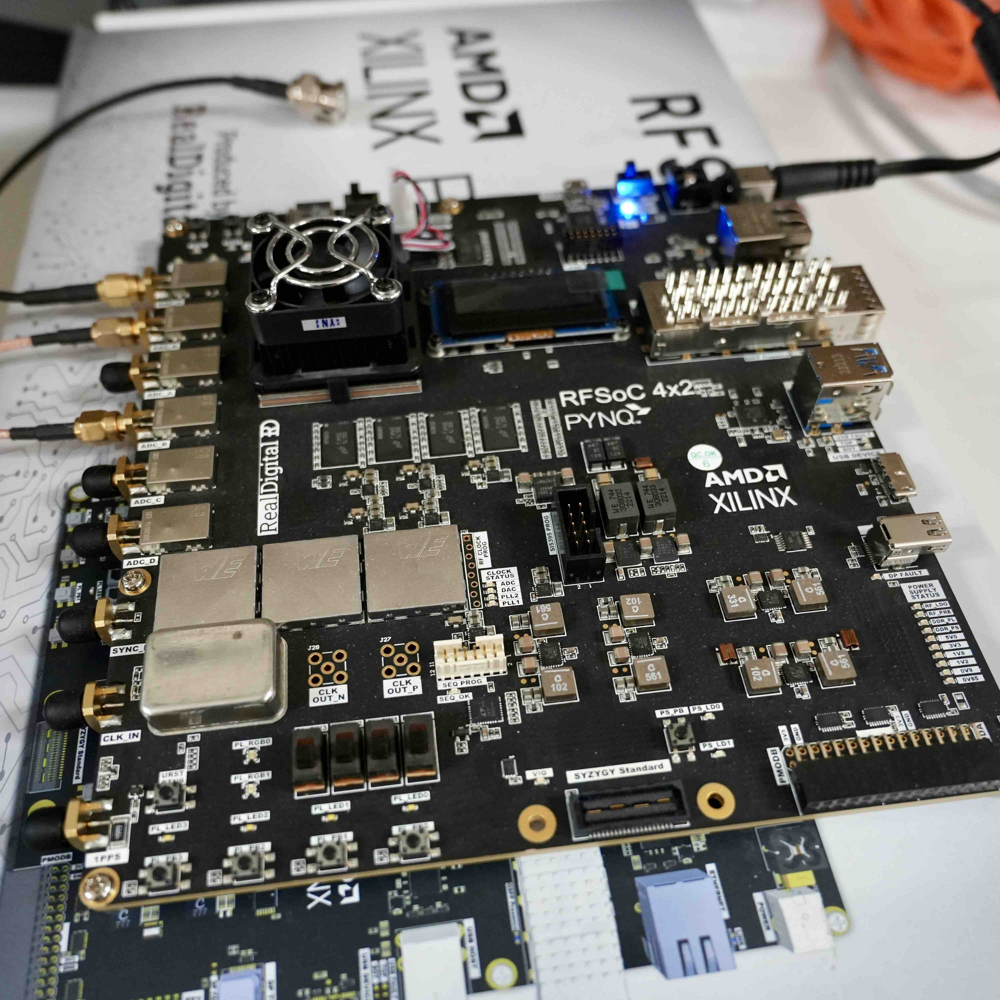
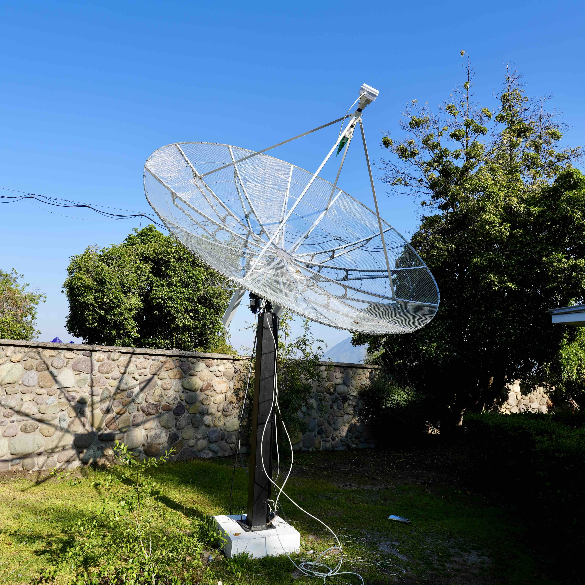

Gallery
Telescopes and experiences
Our team has had experience with hands on instrumentation since day one. In this gallery we show some of the places where team members have worked, collaborate with, or been in the past years. These sites are in Chile and abroad, and include long radio, millimeter, optical technologies. Other picture show sites and telescope under development.


 radio dish")

CHIME/FRB Outrigger at Green Bank Observatory
 CHIME/FRB Outrigger telescope at GBO. CHIME/FRB Outrigger telescope located at Green Bank Observatory (GBO) facility, WV US. A CHIME/FRB Outrigger is a CHIME-like cylinder tilted and pointing towards CHIME's zenith sky location. The Outrigger is a 20-m diameter cylinder with 256 dual-polarization feeds, and a 400--800 MHz bandwidth. Our team closely collaborates with the CHIME/FRB team, with a particular emphasis in correlation algorithms and detecting fast radio bursts (FRB) in very long baseline interferometry (VLBI). These type of observations are fundamental to understand the cosmic origins of these millisecond duration events. Further, their observation in VLBI is very complex, their sky position and duration make observing them, simultaneously with two or more radio telescopes an instrumental challenge. The CHIME/FRB Collaboration has already been able to cross-correlate and localize on-off events (Cassanelli, Leung, & Sanghavi et al. 2024) and soon will find thousands of localized FRBs. The pciture was taken while Tomás was on site helping with the analog chain deployment of the isntrumentation back in 2023.
CHIME/FRB Outrigger telescope at GBO. CHIME/FRB Outrigger telescope located at Green Bank Observatory (GBO) facility, WV US. A CHIME/FRB Outrigger is a CHIME-like cylinder tilted and pointing towards CHIME's zenith sky location. The Outrigger is a 20-m diameter cylinder with 256 dual-polarization feeds, and a 400--800 MHz bandwidth. Our team closely collaborates with the CHIME/FRB team, with a particular emphasis in correlation algorithms and detecting fast radio bursts (FRB) in very long baseline interferometry (VLBI). These type of observations are fundamental to understand the cosmic origins of these millisecond duration events. Further, their observation in VLBI is very complex, their sky position and duration make observing them, simultaneously with two or more radio telescopes an instrumental challenge. The CHIME/FRB Collaboration has already been able to cross-correlate and localize on-off events (Cassanelli, Leung, & Sanghavi et al. 2024) and soon will find thousands of localized FRBs. The pciture was taken while Tomás was on site helping with the analog chain deployment of the isntrumentation back in 2023.
CHARTS. The Canadian-Chilean array for radio transient studies (CHARTS) will be a 256-element interferometer located in Laguna Carén (picture showing the actual site). The site is isolated from the public deep within the park and capable to host the entire array equipment (~20 m x 20 m). Our team will operate the facility fully remotely, minimizing the impact on the park reserve, in an automated system to classify and detect transient signals at long radio wavelengths. In addition, the site has several hills (cerros; in Spanish) which act as a partial radio frequency interference (RFI) shielding. We expecto to start building the array on site as early as 2025. Stay tuned!
 Digitizer. A digitizer is an electronic device capable of transforming analog signal (such as the old tv coaxial cables) to a digital signal (for example an ethernet cable). Digitizers, such as the radio frequency system-on-chip (RFSoC) 4x2 Xilinx AMD boards, are a key piece for any radio astronomical facility. In particular, these new technologies are extremely flexible, letting us program the hardware to our convenince. Based on software of the CASPER Collaboration we will adapt these digitizers for the CHARTS project and further optimize data streaming from cosmic origins. Digitizer development within our group is currently being lead by Bruno.
 CHARTS Pathfinder Telescope. The CHARTS pathfinder telescope or CPT is our antenna prototype at Cerro Calán. The 3-m dish (made by RF-HAMDESIGN) is a testbed for hardware and software for the upcoming project CHARTS. The antenna can be fully controlled remotely, perform narrowband observtions, and monitor low frequencies from 300 MHz to 1 GHz. Our plan is to fully equipped this radio dish with CHARTS components (such as amplification, antenna, and digitization) and set it to observe bright and local sources such as the Vela pulsar. The CPT will help us to further validate our instrument, perform educational science, and lead the way to and improve version of CHARTS. Vicente is the lead engieer in charge of the CPT.